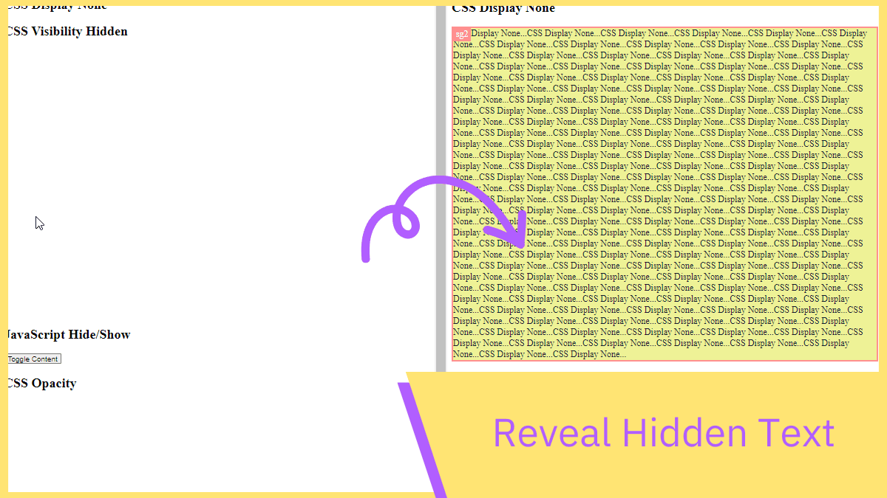
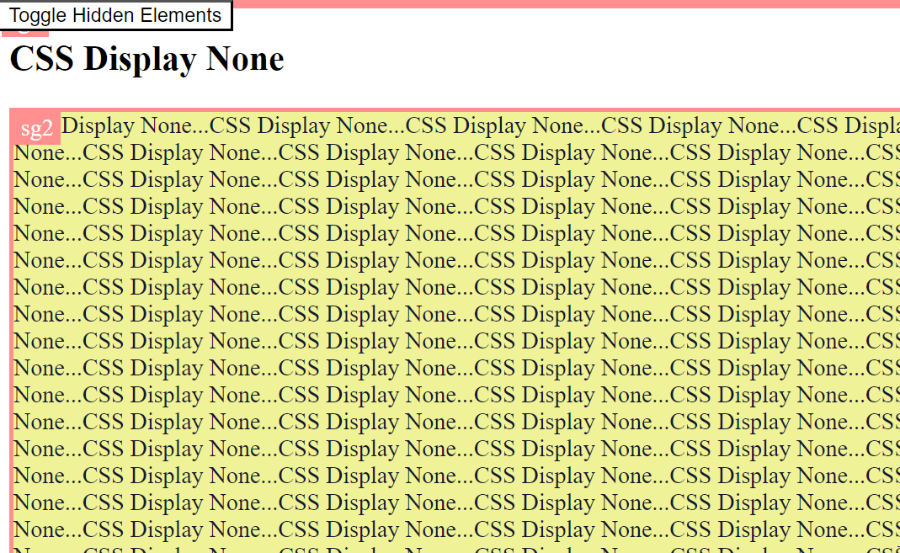
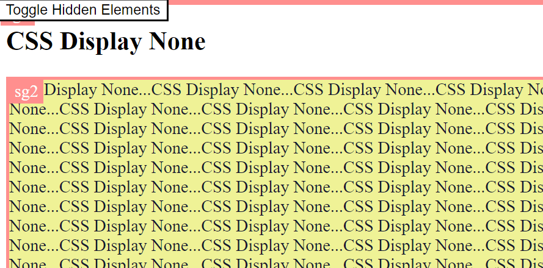
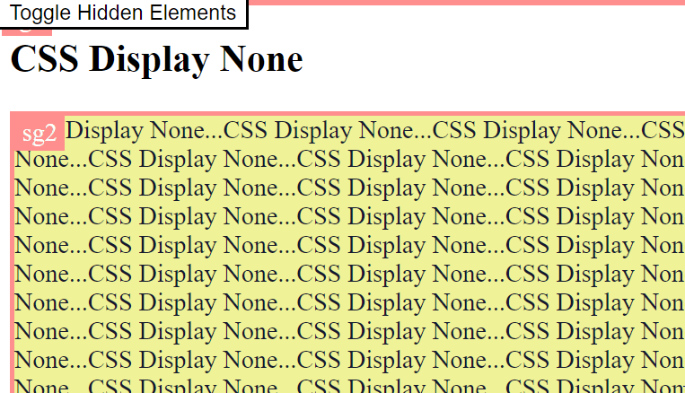
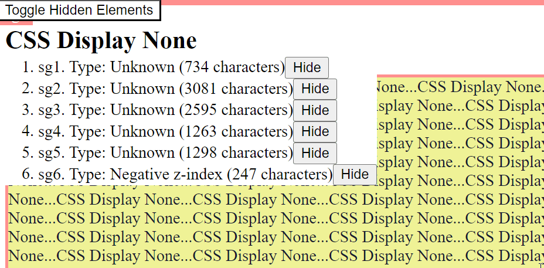
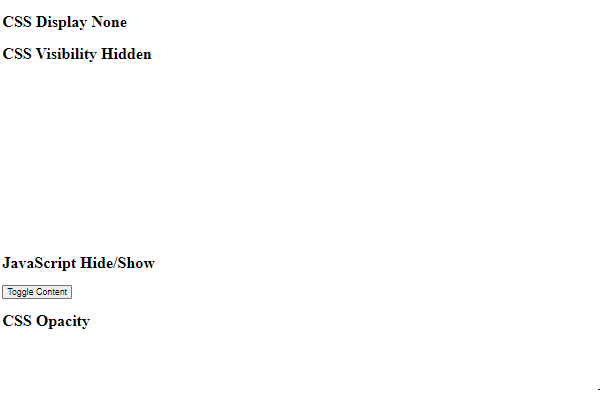
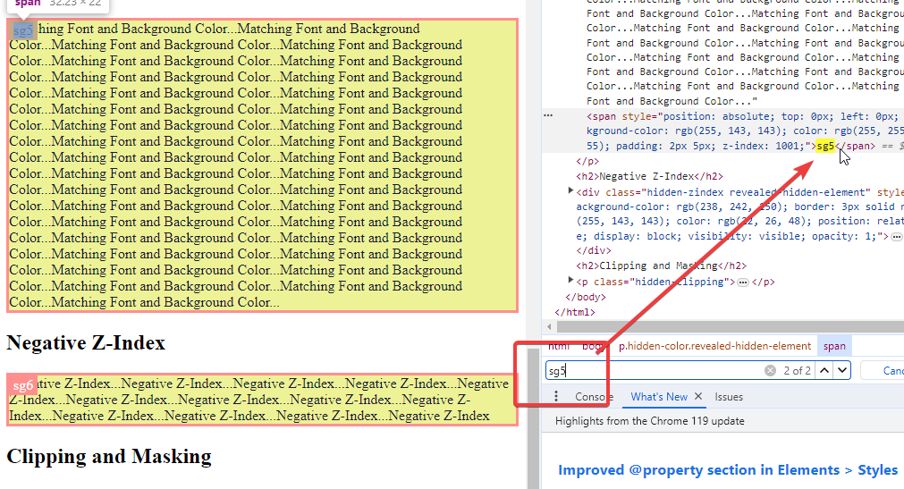

Reveal Hidden Text Bookmarklet 🫥 ➡️ 😐
When analysing competitors' websites or auditing your own, having a comprehensive understanding of all content is essential, including elements not immediately visible. Hidden text may contain key keywords and other crucial SEO-related elements that aren't apparent at first glance. This bookmarklet simplifies the process, allowing you to see most of these elements with just one click. It's also designed to work seamlessly on mobile devices.

Installation Instructions:
Drag the button above to your bookmarks bar. If you don't see the bookmarks bar, you might need to enable it in your browser settings.
How To Use:
- When you are on a webpage, run the bookmarklet.
- It will highlight hidden content detected on the page. The hidden element is highlighted with a yellow background and an orange border.
- You can jump to the element by clicking on the item from the list.
- It will show you the number of hidden characters in each element.
- There is a button to show or hide the hidden element.
- Each of the hidden elements are given a prefix, so it's easy to look it up in the source code.

List of Hidden Elements with Toggle Function
When you run the bookmarklet, it presents a list of all hidden elements found on the page. This list can be toggled on and off by clicking on the "Toggle Hidden Elements" button. This feature allows for an organized view of all hidden elements, enabling quick access and management. The toggle function is especially handy for decluttering the screen when you're not actively inspecting the hidden elements, thereby improving the usability and efficiency of your workflow.
Jump to Hidden Elements
By clicking on an item from the provided list, you can directly jump to the corresponding hidden element on the webpage. This feature enhances navigation efficiency, especially in complex pages with many elements.


Hidden Characters Count
The bookmarklet displays the number of hidden characters in each element. This information can be crucial for SEOs in understanding the extent of hidden content within a page.
Show/Hide Toggle for Hidden Elements
There is a button associated with each hidden element that allows you to toggle its visibility. This means you can easily show or hide these elements, which is particularly useful for debugging or examining how the page layout changes with different content visibility. It is also useful when some unhidden elements block useful elements on the page.


Visual Highlighting
Hidden elements are highlighted with a yellow background and an orange border. This visual indication makes it easier to identify and focus on these elements amidst the rest of the page content.
Prefix for Hidden Elements
Each hidden element is assigned a prefix "sg" followed by a number, simplifying the task of locating and referencing it in the page's source code. This feature is beneficial when you need to trace or modify specific elements within the code.
